🗣️ Business English Mastery 12-Week System — Complete User Guide
Everything you need to use the app, step by step, with screenshots and real examples — so you can start improving your spoken Business English today, 25 minutes a day.
1Getting started
The app is a complete 12-week training program for professional spoken English. You practice 6 days a week, 25 focused minutes a day. Everything — your progress, notes, scores and voice recordings — is saved automatically in your browser.
Open the app in Chrome, Edge or Safari:
• Online: https://salomon1010.github.io/Business-English/
• Local: http://localhost:8001
Allow microphone access when the browser asks (needed for the voice recorder — the heart of the program).
Always use the same browser on the same device. Your progress lives in that browser. (Section 12 shows how to back it up or sync between devices.)
Start with the Dashboard. It always tells you exactly what today's session is — just click “Start today's 25-minute session →”.
💡 The golden rule: every session must produce evidence — a recording, a transcript, phrases, or correction notes. Watching videos passively does not count. If you didn't record or write anything, it wasn't a real session.
2The navigation bar
The bar at the top is how you move around. It is always visible.
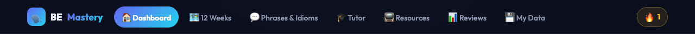
The 7 tabs plus your daily streak counter (🔥) on the right.
Tab
What it's for
When you use it
🏠 Dashboard
Overview + shortcut to today's session
Every day, first thing
🗺️ 12 Weeks
The full program: 12 weeks × 7 days
To open any practice day
💬 Phrases & Idioms
152 business phrases and idioms to master
Wednesdays + daily review
🎓 Tutor
Prepare and log your 2 weekly tutor lessons
Tuesdays & Fridays
📺 Resources
Curated YouTube channels & practice sites
When a session says “pick a clip”
📊 Reviews
Score your week + monthly dashboards
Every Sunday
💾 My Data
Backup, restore and sync your progress
Once a week (backup!)
The 🔥 number on the right is your streak — how many days in a row you have completed a session. Protect it!
3Dashboard — your home base
The Dashboard removes all decisions: it tells you what to do today and shows your overall progress.
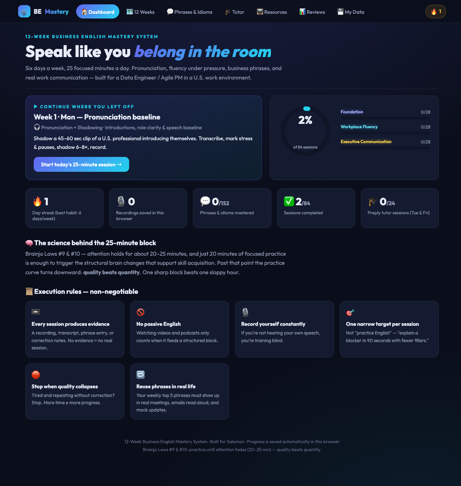
The Dashboard: today's session card (left), progress ring (right), and your key stats.
How to use it — step by step
Read the “Continue where you left off” card. It shows the next unfinished day (e.g. Week 1 · Mon — Pronunciation baseline) with a short description of the task.
Click “Start today's 25-minute session →”. This takes you straight into the practice screen for that day (see Section 5).
Check the progress ring. It shows the % of the 84 total sessions completed, split into the three phases: Foundation (W1–4)Workplace Fluency (W5–8)Executive Communication (W9–12)
Glance at your stats: 🔥 streak, 🎙️ recordings saved, 💬 phrases mastered (out of 152), ✅ sessions completed (out of 84), and 🎓 tutor sessions (out of 24).
Re-read one “Execution rule” at the bottom before you start — they keep your practice honest.
📌 Example — a normal morning
It's Tuesday of Week 2. You open the app and the card says: “Week 2 · Tue — What are you working on this week?”. You click Start today's 25-minute session, and 25 minutes later you have two recordings of your weekly status update and 3 corrections written down. Your streak goes from 8 to 9. Done for the day.
4The 12-Week journey
The 🗺️ 12 Weeks tab is the map of the whole program. Each card is one week with its own theme and goal.
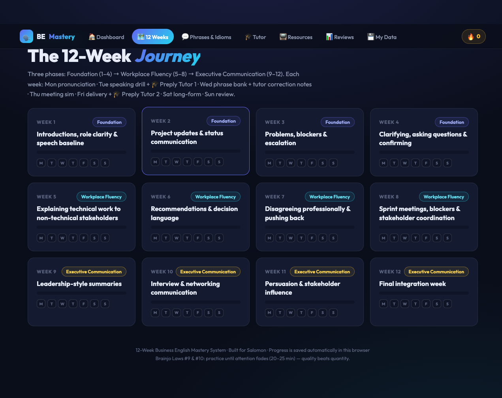
12 week cards grouped in 3 phases. The 7 small squares on each card are the days — they light up as you complete them.
How to open a practice day
Click the 🗺️ 12 Weeks tab.
Click a week card — for example Week 1: Introductions, role clarity & speech baseline. You'll see the week's goal and its 7 days.
Click a day row (Mon–Sun) to open that day's guided session.
The 7 dots on each card show which days are done. When all 7 are filled, the week is complete.
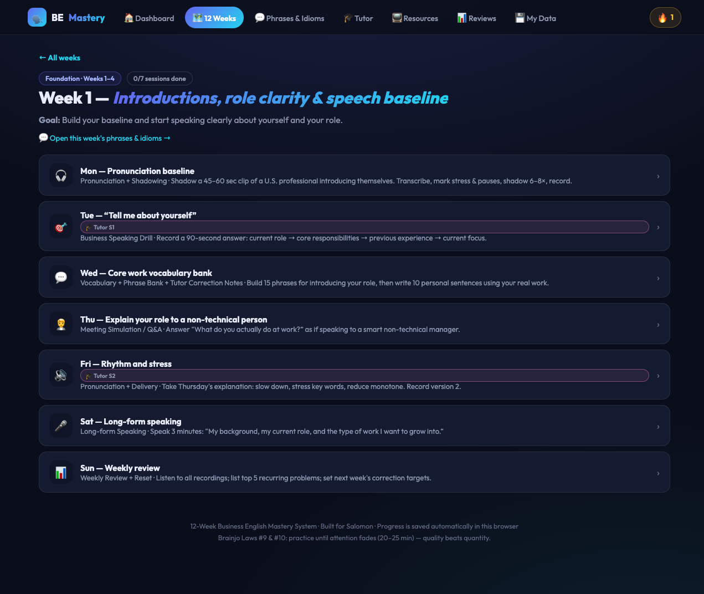
Inside a week: the theme, the goal, and the 7 daily sessions. Completed days are marked ✓.
The weekly rhythm — every week follows the same pattern
📌 Example — Week 3 “Problems, blockers & escalation”
On Tuesday the app asks you to explain: “A dependency is delayed and will affect delivery.” You structure it as issue → cause → impact → mitigation → ask and record yourself saying:
“We've run into an issue with the vendor API. The root cause appears to be a breaking change on their side. This will impact the timeline by about one week. To mitigate that, we're building a temporary workaround. What we need is a decision on whether to delay the release or ship without that feature.”
That is one complete, realistic escalation — in under 40 seconds.
5A daily 25-minute session — the core of the app
This is the screen where you actually practice. Everything you need is on one page: the task, a timer, a step-by-step template, a voice recorder, a notes box and a self-score.
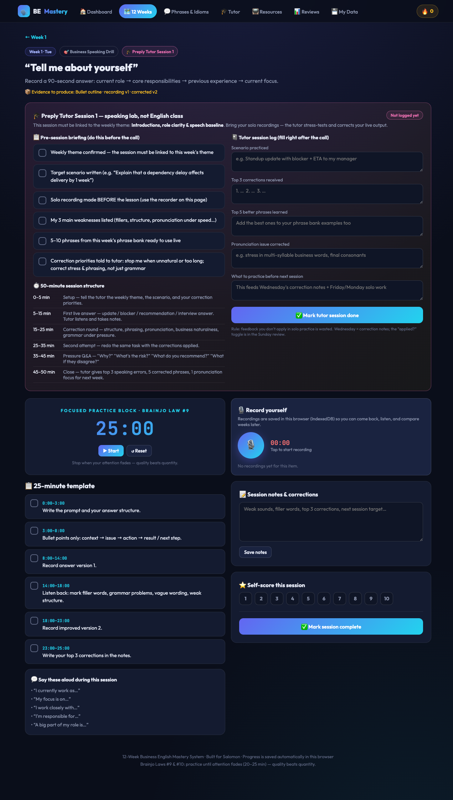
A Tuesday session (Week 1 — “Tell me about yourself”). Tutor-day sessions also show the pink tutor panel at the top.
How to run a session — step by step
Read the task at the top. Example: “Record a 90-second answer: current role → core responsibilities → previous experience → current focus.” The 🏆 line tells you what evidence you must produce.
Press ▶ Start on the 25-minute timer (see Section 6). One focused block — no phone, no tabs.
Follow the timed template steps (e.g. 0:00–3:00 Write the prompt and your answer structure). Click each step to tick it off as you finish it — it turns green.
Use the “Say these aloud” phrases at the bottom of the template — they are this week's phrases; force yourself to use them in your answer.
Record yourself with the 🎙️ recorder (see Section 7) — usually version 1, then an improved version 2.
Listen back and write your corrections in Session notes, then click Save notes.
Self-score the session 1–10 by clicking a number.
Click ✅ “Mark session complete.” Your streak, progress ring and week dots all update.
📌 Example — filled-in session notes (Week 1, Tuesday)
Fillers: said “uh” 9 times → replace with a silent pause.
Grammar: ✗ “I am working on it since Monday” → ✓ “I have been working on it since Monday.”
Structure: forgot to end with my current focus → next time close with “Right now, my main focus is…”.
Next target: keep the whole answer under 90 seconds.
Self-score: 7/10.
⛔ Don't skip the listen-back step. Recording without listening is training blind — the improvement comes from hearing your own mistakes and re-recording a better version.
6Using the timer
Every session is built around one 25-minute focused block (attention research: quality collapses after ~25 minutes — one sharp block beats a sloppy hour).
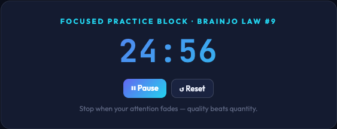
The countdown timer inside every session.
Click ▶ Start when you begin the first template step. The button becomes ⏸ Pause.
Pause only for real interruptions — not to check your phone.
Click ↺ Reset to put it back to 25:00 for a fresh block.
When it hits 0:00, stop. If you didn't finish everything, note it and stop anyway — consistency beats marathon sessions.
7Recording yourself
The built-in recorder saves your voice inside the browser (no upload, fully private). Recordings are attached to the exact day you made them, so you can compare Week 1 vs Week 12.
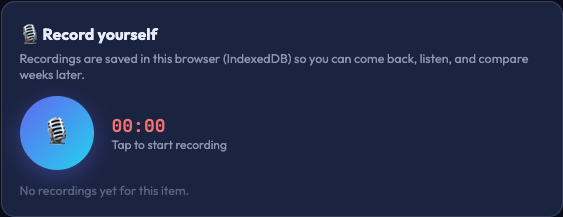
The recorder panel in every session. The round button turns red and pulses while recording.
Click the round 🎙️ button to start. The first time, your browser asks for microphone permission — click Allow.
Speak your answer. The red counter shows the elapsed time.
Click the button again to stop. The recording appears in a list below with a play bar.
Play it back and listen for fillers, grammar slips, flat rhythm, vague wording.
Record version 2 applying the corrections. Keep both — comparing v1 to v2 is where you hear progress.
Delete any false start with the 🗑️ button.
💡 Milestone recordings to keep forever: your Week 1 self-introduction and your Week 12 final set (90-sec intro · 2-min update · 2-min escalation · 3-min explanation). The before/after difference is your proof of progress.
8Phrases & Idioms bank — 152 building blocks
Each week unlocks 10–13 phrases and idioms matched to the week's theme (updates, escalation, disagreement, persuasion…). Your goal: make them part of your active speech.
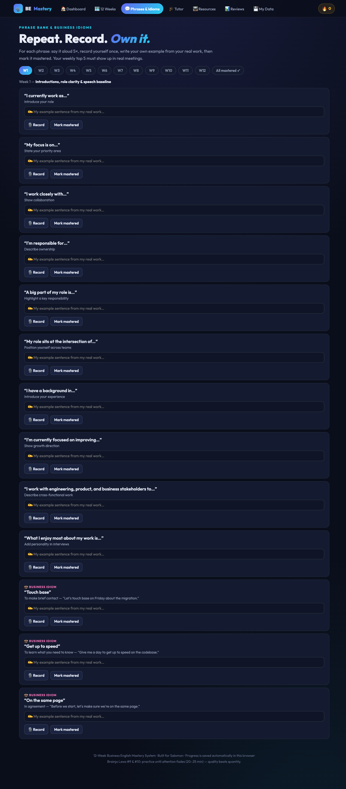
Phrases filtered by week. Idioms are tagged in pink with their meaning and a sample sentence. Mastered phrases get a green border.
How to work the phrase bank — step by step
Open 💬 Phrases & Idioms and select the current week in the category pills (or All).
Read the phrase and its purpose. E.g. “The main blocker is…” — state the issue clearly.
Say it aloud 3 times, then build your own sentence from your real work.
Click 🎙️ Record on the phrase card and record your sentence — the recording stays attached to that phrase.
Click “Mark mastered” only when you can use the phrase naturally without thinking. It turns green and counts toward your 152.
Every Sunday, pick 5 phrases to actively use in real meetings and emails next week.
📌 Example — turning a phrase into YOUR phrase
App phrase: “By Friday, I expect to…” (commit to a timeline)
Your sentence:
“By Friday, I expect to finish the data-quality checks and hand the report to the finance team.”
Idiom example: “Touch base” = make brief contact →
“Let's touch base Thursday morning about the migration before the demo.”
Record both, then use them in your next real standup. That's when they become yours.
9Tutor sessions — Tuesdays & Fridays
Twice a week you meet a live tutor (e.g. on Preply). The 🎓 Tutor tab makes sure every lesson is a speaking lab linked to the week's theme — not a generic English class.
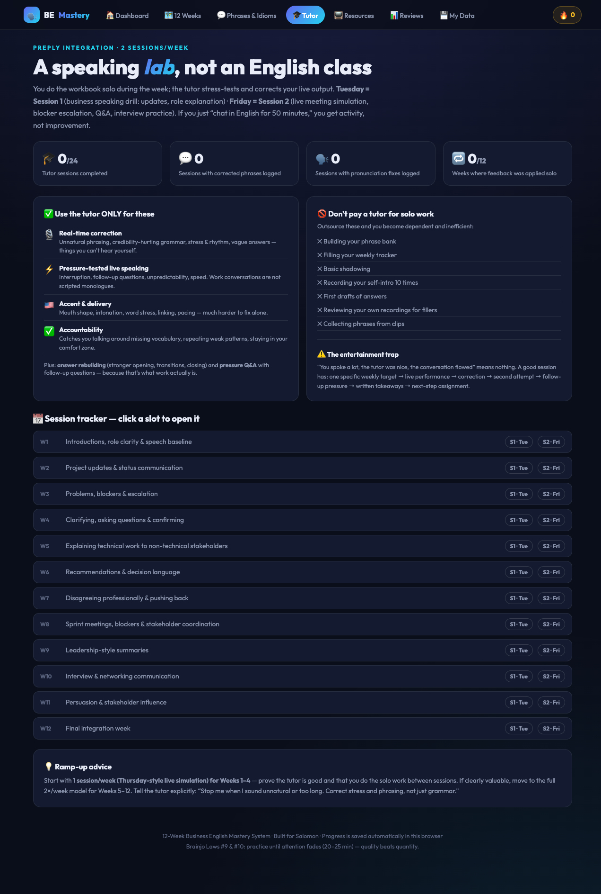
The Tutor tab: what tutors are for (and NOT for), the 50-minute agenda, and your 24-session tracker.
Before the lesson — the pre-session briefing
Open the day's session (Tue or Fri) — the pink tutor panel is at the top.
Tick the 6 preparation boxes: weekly theme confirmed · target scenario written · solo recording made BEFORE the lesson · your 3 main weaknesses listed · 5–10 phrases ready to use live · correction priorities to tell the tutor.
Follow the 50-minute agenda during the call: setup (0–5) → first live answer (5–15) → correction round (15–25) → second attempt (25–35) → pressure Q&A (35–45) → close with top-3 errors (45–50).
After the lesson — the session log
Fill the log immediately: scenario practiced, top 3 corrections, top 5 better phrases, pronunciation fix, and what to practice before next session.
Click ✅ “Mark tutor session done” — it counts toward your 24 tutor sessions.
Add the corrected phrases to your Wednesday phrase work so the feedback is reused, not lost.
📌 Example — a filled tutor log (Week 3, Tuesday)
Scenario: escalating a delayed vendor dependency to my manager with an ETA.
Top 3 corrections: 1. “informations” → “information” (never plural). 2. Answer first, context second. 3. Stress “DE-pendency”, not “de-PEN-dency”.
Better phrases learned: “Flag it early”, “the recovery plan is…”, “worst case, we can…”.
Pronunciation: final -ed sounds (“delayed”, “blocked”) were disappearing.
Before next session: re-record the escalation applying all three corrections.
💡 Use the tutor for what only a tutor can do: real-time correction, pressure Q&A, accent & delivery. Don't spend paid minutes on things you can do solo (building phrase lists, first drafts, shadowing).
10Resources library
When a session says “shadow a clip of a U.S. professional”, this is where you find one. Each card tells you which day of the week it is for.
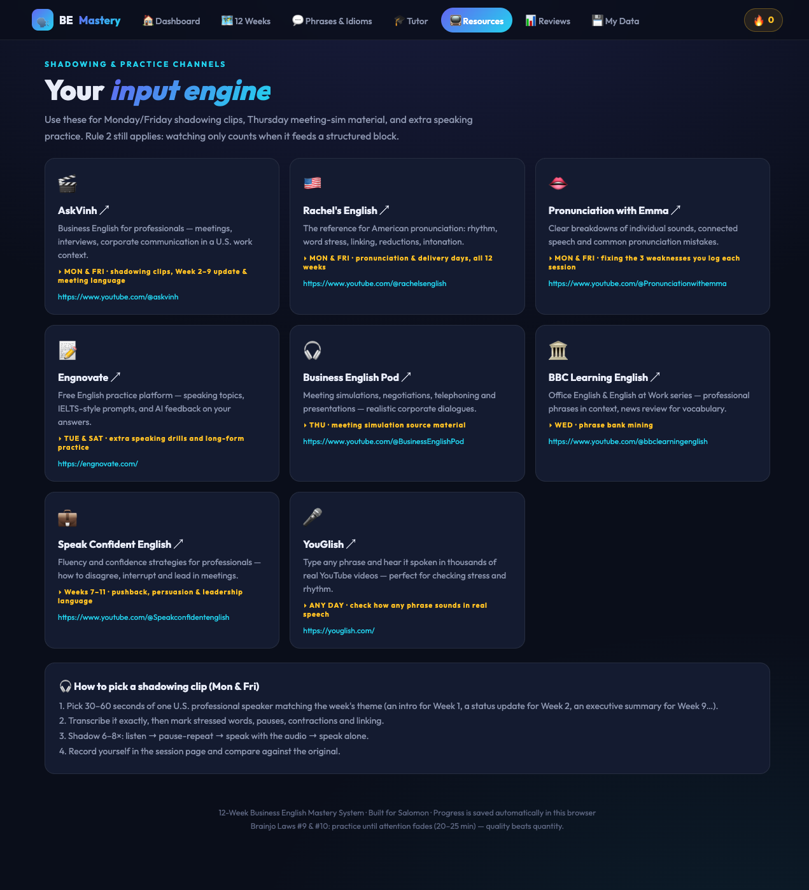
Curated channels & sites — each with a “USE FOR” label telling you when it fits your week.
Check today's session type (e.g. Monday = pronunciation + shadowing).
Pick the matching resource — the gold “USE FOR” label tells you (e.g. Rachel's English — MON & FRI, pronunciation days).
Click the card to open the channel/site in a new tab, choose a 30–60 second clip, and come back to your session.
📌 Example — checking how a phrase really sounds
You're unsure how natives say “I'd push back slightly on that.” Open YouGlish, type the phrase, and hear it in dozens of real videos — copy the stress and rhythm you hear, then record yourself saying it the same way.
11Weekly Reviews & monthly dashboards
Every Sunday you score your week honestly on 5 skills. Every 4 weeks you complete a bigger dashboard that decides your next month's focus.
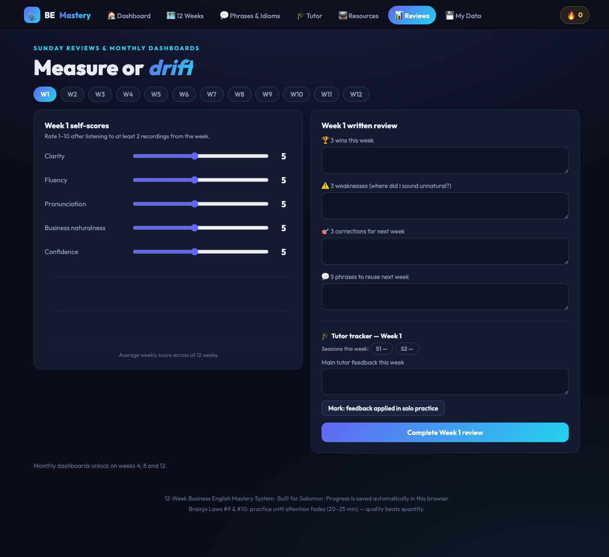
The Sunday review: five 1–10 sliders, a trend chart across the 12 weeks, and the 3-wins / 3-weaknesses / 3-corrections box.
The Sunday review — step by step
Open 📊 Reviews and select the week that just ended.
Listen to at least 2 of your recordings from the week first — score what you hear, not what you hope.
Move the 5 sliders (1–10): Clarity · Fluency · Pronunciation · Business naturalness · Confidence.
Write 3 wins, 3 weaknesses, 3 corrections for next week in the text box, then save.
Watch the trend chart grow week after week — that line is your progress.
After weeks 4, 8 and 12, also complete the Month Dashboard: tick each target (recordings made, phrases collected, tutor sessions done…) and answer the self-assessment questions.
3 wins: gave a full standup update without notes · used “the main blocker is…” in a real meeting · streak intact all 6 days.
3 weaknesses: still translating from French mid-sentence · monotone delivery · updates run too long.
3 corrections for next week: 60-second cap on updates · stress the key word in every sentence · prepare openings in English, not translated.
12My Data — backup, restore & sync
Your progress lives in this browser. The 💾 My Data tab lets you back it up, move it to another device, or sync it automatically through a private GitHub repository.
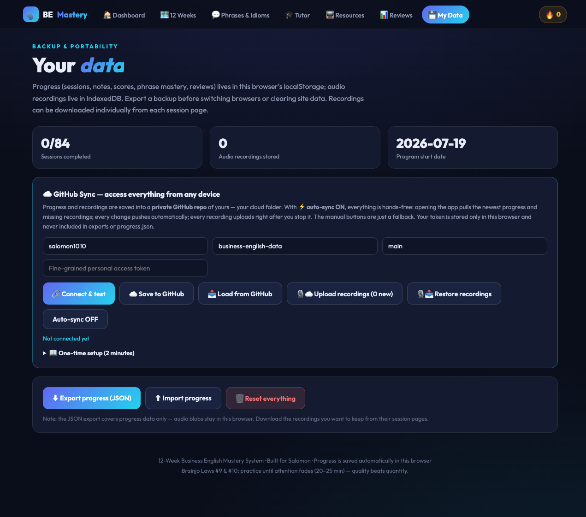
Export/import your progress, set up GitHub sync, or reset the program.
Simple backup (recommended for everyone)
Click “Export JSON” once a week — it downloads a small file with all your progress, notes and scores.
Keep it somewhere safe (Drive, Dropbox, email to yourself).
To restore or move to a new computer: open the app there → My Data → Import → choose the file.
Automatic GitHub sync (optional, advanced)
Create a private GitHub repository (e.g. business-english-data).
Create a fine-grained personal access token with Contents: read & write permission on that repo only.
In My Data, enter your GitHub username, the repo name, branch (main) and paste the token, then click Save & connect.
Push / Pull to upload or download progress, or enable auto-sync. Recordings can be uploaded separately with “Upload recordings”.
⛔ Careful: “Reset everything” permanently erases all progress in this browser. Export a JSON backup first. Also note the token is stored only in your browser and never included in exports.
13Your weekly routine at a glance
Print this. This is the whole system in one table — 25 minutes a day plus two tutor lessons.
Day
Open
Do (25 min)
Evidence produced
Mon
Dashboard → today's session + 📺 Resources
Pick a clip → transcribe → shadow 6–8× → record imitation
3–5 min long-form talk → review → redo weakest section
Long recording
Sun
📊 Reviews
Listen to 2 recordings → score 5 sliders → 3 wins/weaknesses/corrections → pick 5 phrases for next week
Weekly review saved
14FAQ & troubleshooting
The recorder doesn't work / no microphone
Click the 🔒/camera icon in the browser address bar → set Microphone → Allow → reload the page. On macOS also check System Settings → Privacy & Security → Microphone for your browser.
My progress disappeared
You probably opened the app in a different browser, a private/incognito window, or a different device. Go back to your usual browser — or restore from your JSON backup (Section 12). This is why the weekly Export JSON habit matters.
I missed a day — is my streak ruined?
The streak resets, but the program doesn't. Just open the Dashboard and do the next unfinished session. The system is built for 6 days/week — one rest day is expected.
Can I do more than 25 minutes?
Do a second separate block later (e.g. extra phrase recordings) rather than one long session. The rule: stop when quality collapses — tired repetition without correction trains mistakes.
Do I need a tutor to use the app?
No — all solo features (sessions, recorder, phrases, reviews) work without one. But the 2×/week tutor rhythm is built in because live correction and pressure Q&A are the fastest way to fix what you can't hear yourself.
In what order should I do the weeks?
In order, 1 → 12. Each week's phrases and skills build on the previous ones, and Weeks 4, 8 and 12 end with month dashboards that set up the next phase.